Dissect
Figures that explain a process by running it. Each one is a model run by a simulation: open the steps that have a window, click a dot to follow it, and try the what-ifs on the step its caption names. Made with Dissect, an Agent Skill.
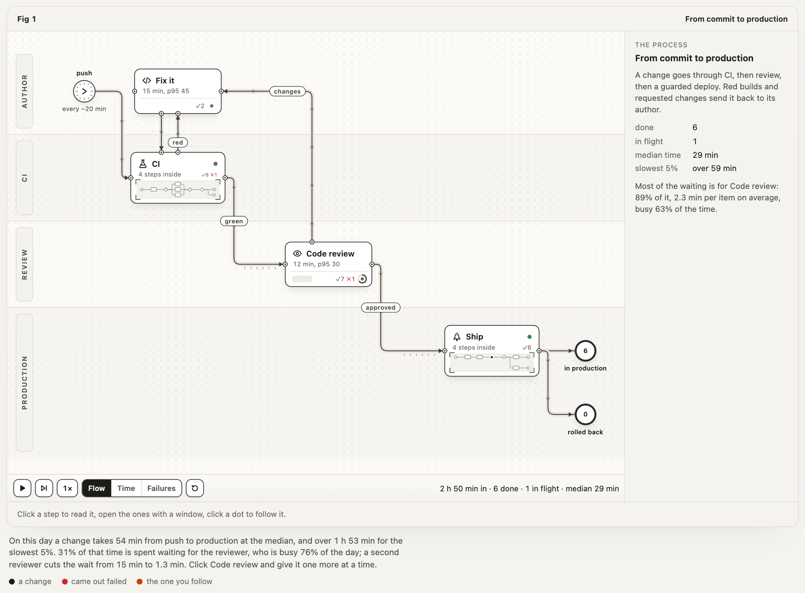
From commit to production
CI and Ship open into their own processes; red builds and requested changes go back to the author. A third of a change's time is waiting for the one reviewer on duty.
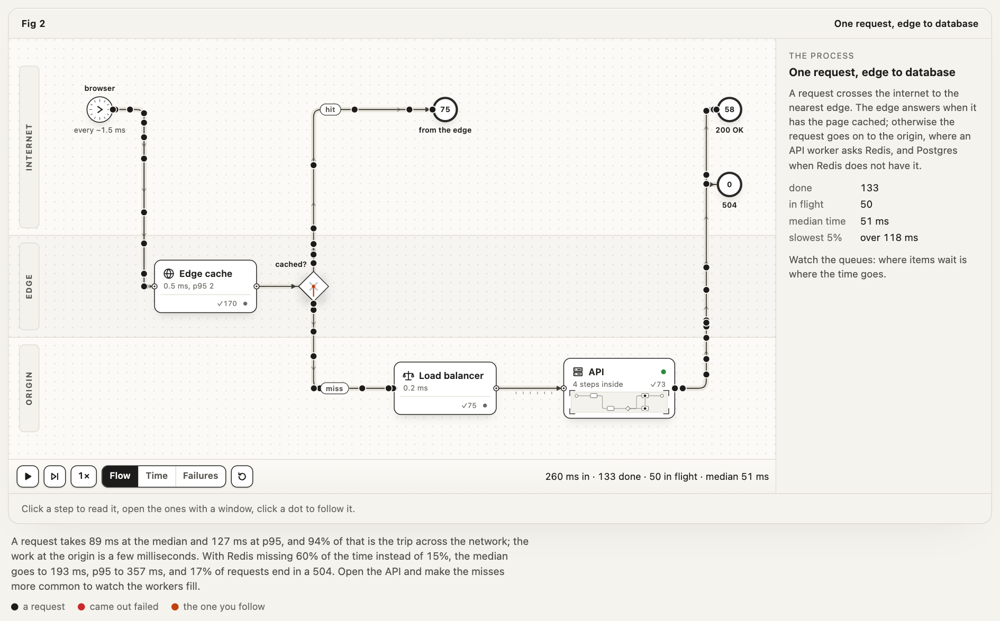
One request, edge to database
Requests travel with real latencies. The trip is almost all of the time, and a colder cache fills the API's workers until 504s start.
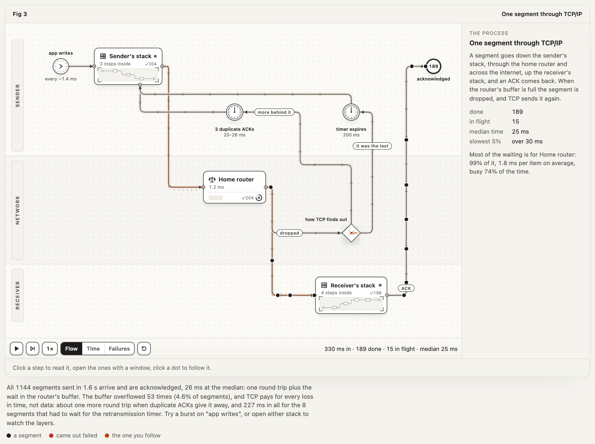
One segment through TCP/IP
Down the sender's layers, through a router whose buffer overflows, up the receiver's. A loss costs a round trip, or a whole retransmission timer.
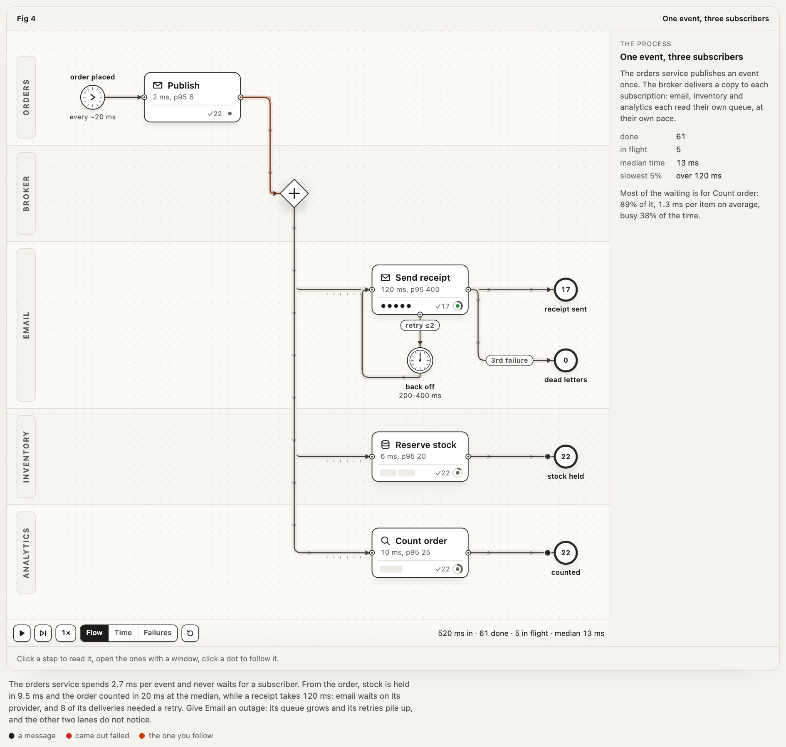
One event, three subscribers
A fan-out to email, inventory and analytics, each with its own queue, retries and dead letters. Take one down and the others do not notice.
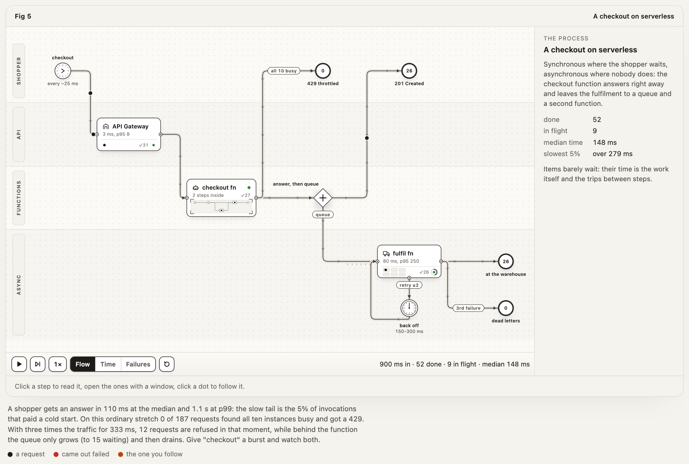
A checkout on serverless
Concurrency limits and cold starts on the synchronous path, a queue on the asynchronous one. A burst is refused by one and absorbed by the other.
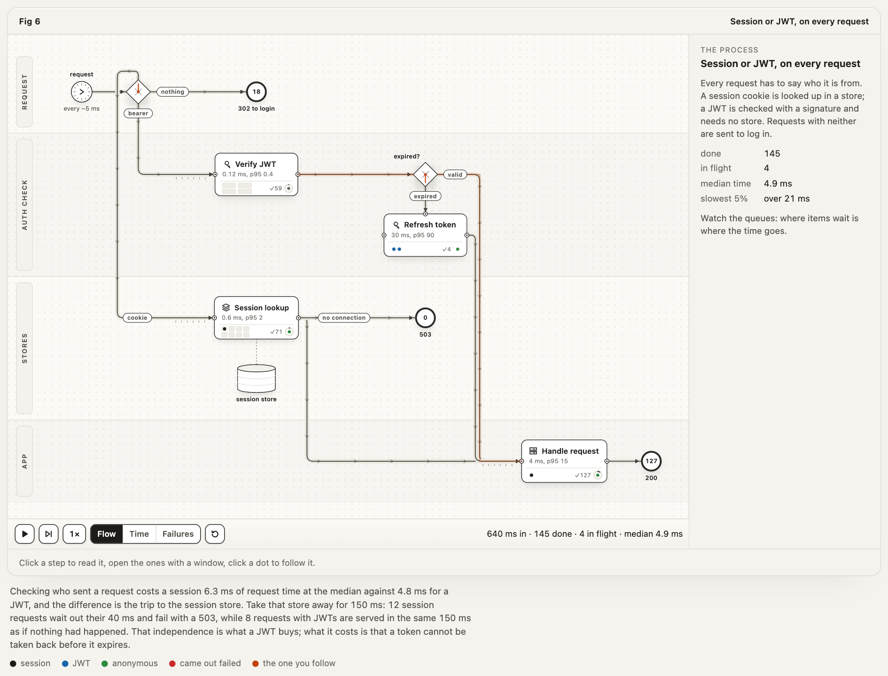
Sessions, JWTs and OAuth
The check on every request, with a session store outage as the what-if, and an OAuth login with PKCE in three phases you can open.
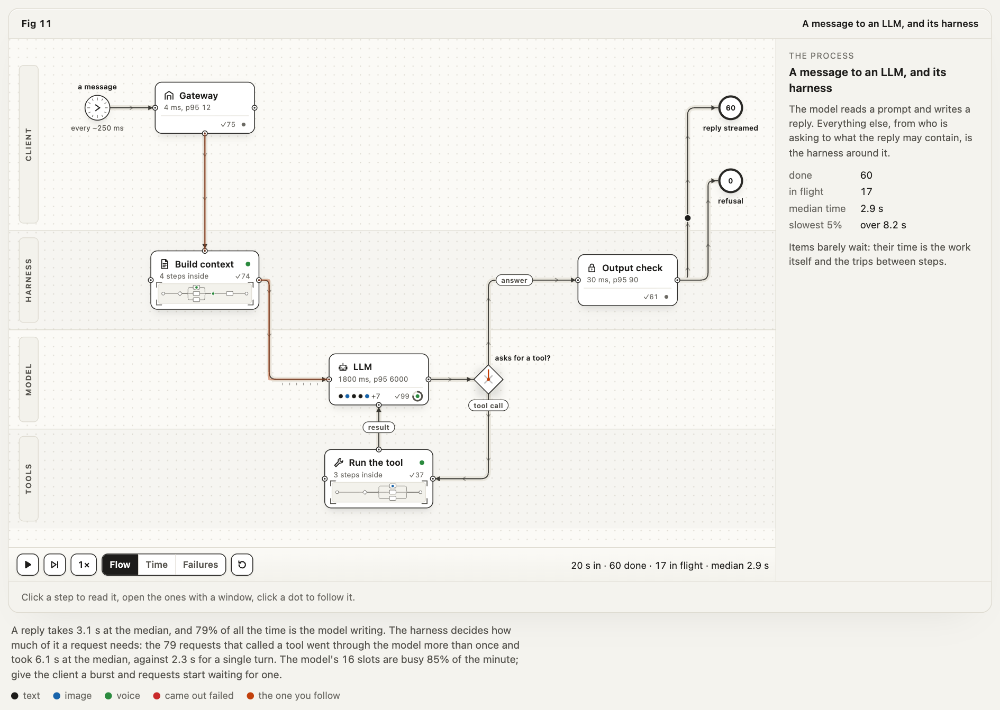
A message to an LLM, and its harness
The model stays a closed box; the context, the tool loop and the output check are the figure. Every tool call is another full turn through the model.
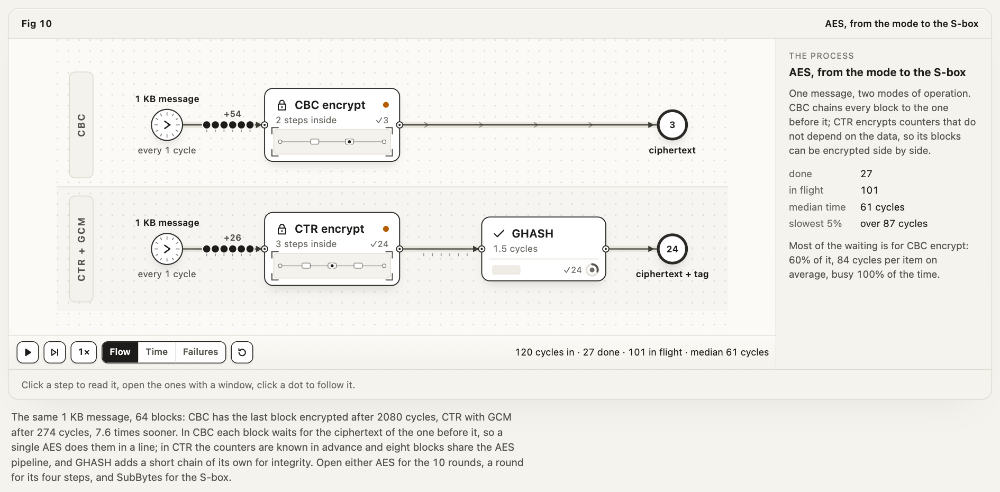
AES, from the mode to the S-box
CBC and CTR with GCM encrypt the same message side by side; open AES for its rounds, a round for its steps, SubBytes for the S-box.
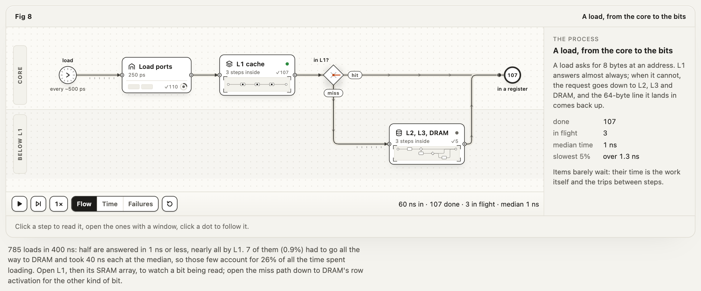
A load, from the core to the bits
Five levels deep: L1 down to its SRAM array and output flip-flop, the miss path down to DRAM's row activation, where a bit is a capacitor.
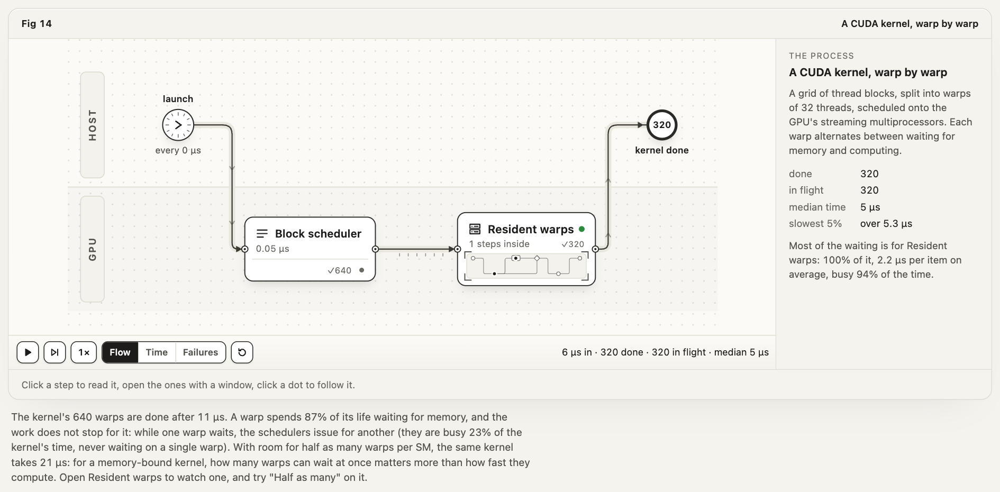
A CUDA kernel, warp by warp
640 warps alternate between waiting for memory and computing. Halve the warps that can wait at once and the kernel takes twice as long.
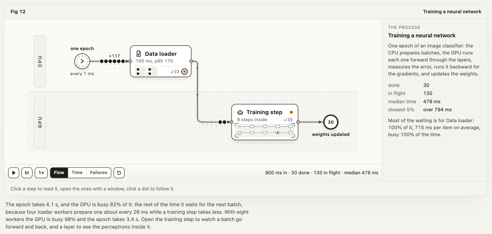
Training a neural network
A data loader feeds the GPU; the forward pass runs one way and the backward pass the other; a layer is 128 perceptrons. The GPU waits for data.
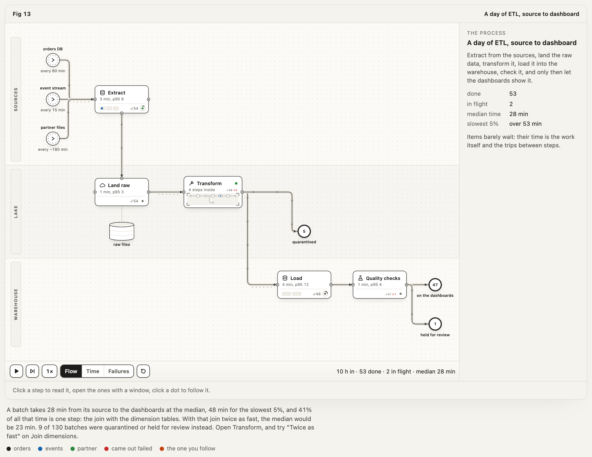
A day of ETL, source to dashboard
Three sources at their own rhythm, through extract, land, transform, load and checks. One step, the join, is most of the time to the dashboard.
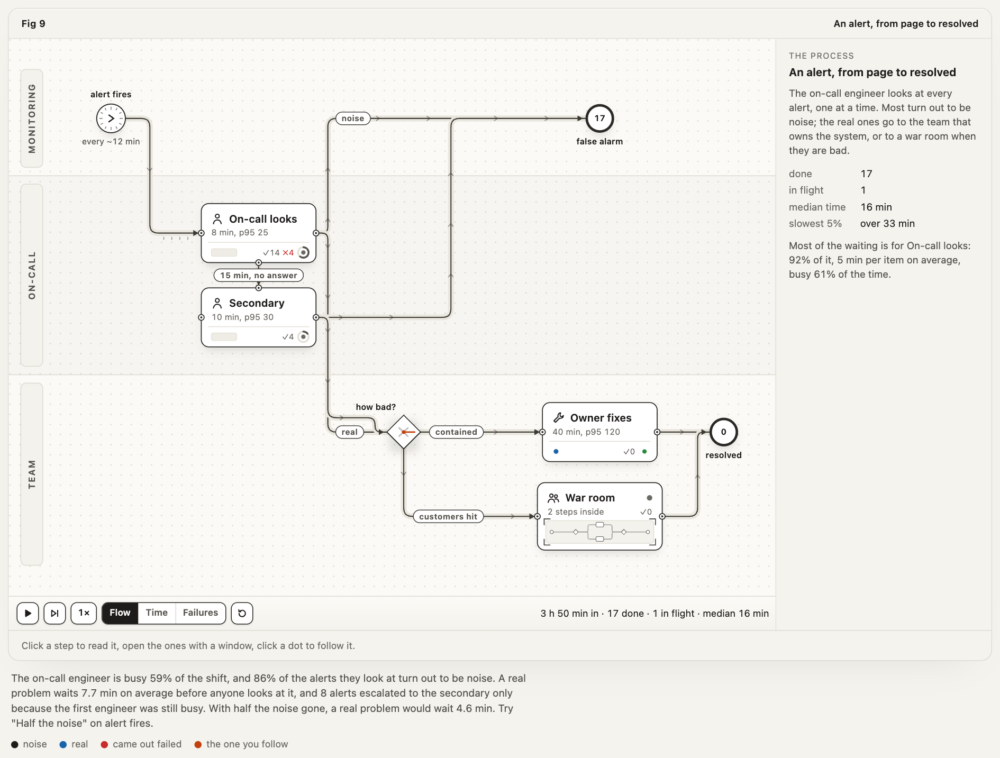
An alert, from page to resolved
One on-call engineer, escalation after 15 minutes, a war room. Four alerts in five are noise, and real problems wait behind them.